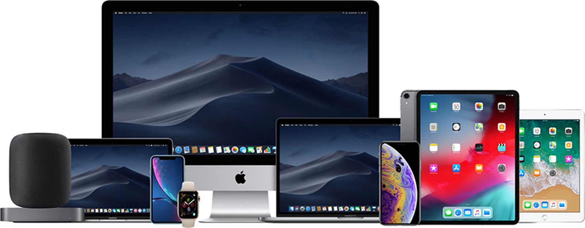
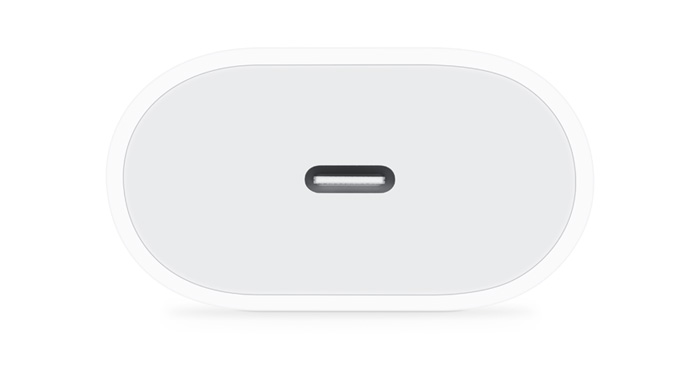

- Apple Macbook Pro 13"
- Apple Macbook Pro 16"
- Apple Macbook Air"
Apple

우리는 탄소 중립을 실천합니다.
2030년엔 우리 모든 제품 역시 그 기준을 따르게 됩니다.
디자인 방식부터
제조 방식,
운송 방식,
사용 방식,
재활용 방식까지.

제작에 플라스틱, 구리, 주석, 아연을 비롯한 특정 소재가 가장 많이 쓰이는 제품은 전원 어댑터입니다. 우리는 작년 한 해 iPhone 및 Apple Watch 제품 구성에서 전원 어댑터를 제거함으로써 지구로부터 채굴해야 하는 소재의 양을 상당히 줄일 수 있었습니다. 더불어 제조 공정 및 운송 시 배출되는 탄소의 양도 그만큼 저감할 수 있었죠. 더 작고 가벼워진 패키지는 한 번에 더 많은 제품을 운송할 수 있게 해주고, 이는 우리의 탄소 발자국 감소에도 일조합니다. 전원 어댑터를 제품에 포함시키지 않기로 한 결정은 Apple에게도 과감한 변화였지만, 지구를 위해서도 꼭 필요한 일이었죠